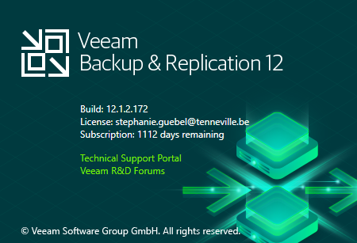
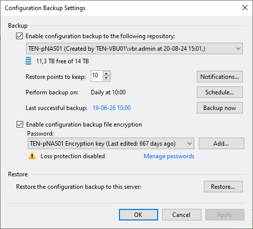
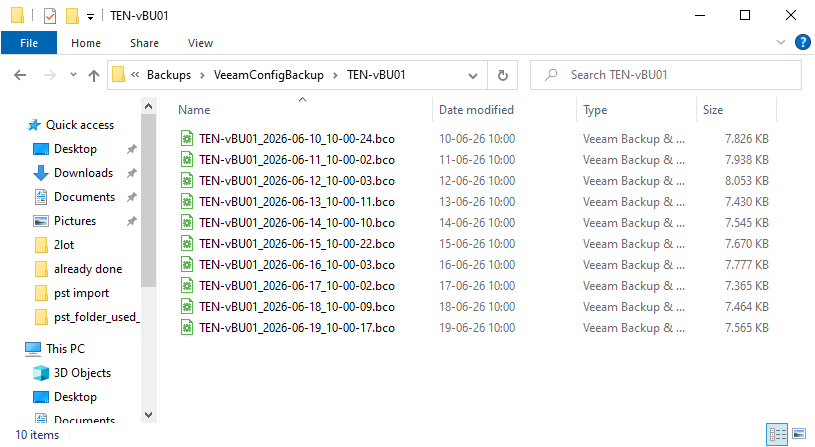
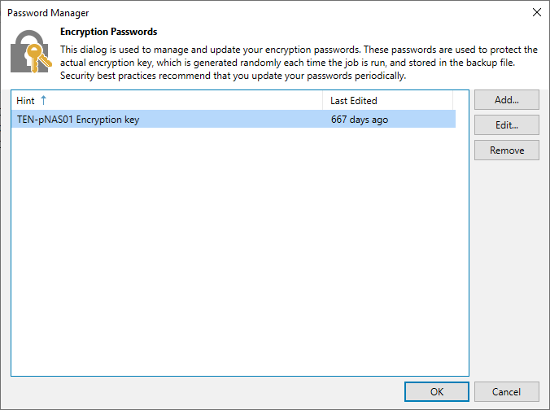
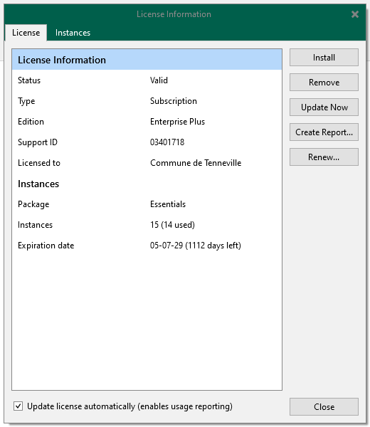
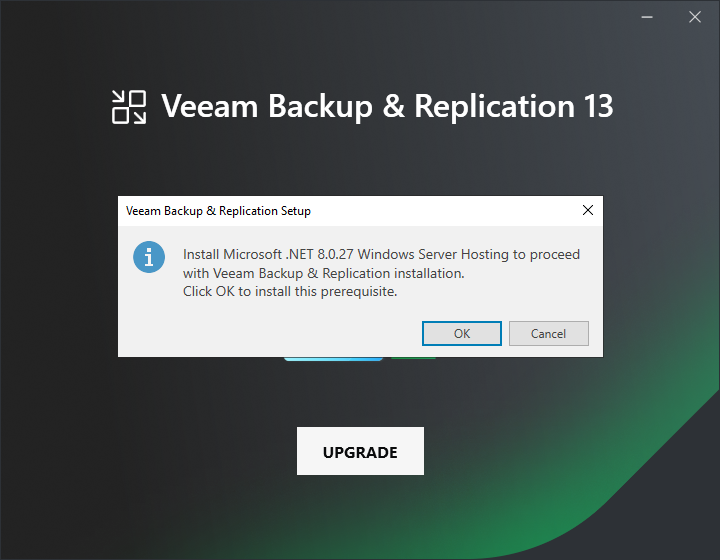

🎯 Objective
Upgrade an existing Veeam Backup & Replication 12.3.1.1139 or later environment to Veeam Backup & Replication 13.x while preserving all existing backup jobs, repositories, proxies and configuration.
📋 Environment
| Component | Value |
|---|---|
| Operating System | Windows Server 2022 |
| Source Version | 12.3.x |
| Target Version | 13.x |
| Database | PostgreSQL or Microsoft SQL Server |
| License | Enterprise Essentials |
📌 Verify Current Version
Veeam Backup & Replication 13 supports direct upgrades only from version 12.3.1.1139 or later.
Open:
- Menu → Help → About
Verify the currently installed build number.

If the installed version is 12.3.1.1139 or later, continue with this procedure.
If the installed version is older than 12.3.1.1139, the server must first be upgraded to the latest available Veeam Backup & Replication 12 release before upgrading to Version 13.
Follow the procedure: Upgrade to Latest Veeam Backup & Replication 12 Version
⚠️ Prerequisites
- Verify all backup jobs completed successfully.
- Verify no backup, backup copy, tape or configuration backup jobs are running.
- Verify Configuration Backup is enabled.
- Verify Configuration Backup files exist on the repository.
- Verify the encryption password used by Configuration Backup is present in Password Manager.
- Verify all backup repositories are online and accessible.
- Verify all backup proxies are online.
- Verify the license is valid.
- Verify the VMware version is supported by Veeam 13.
- Verify protected Windows and Linux operating systems are supported by Veeam 13.
- Verify sufficient free disk space exists on the system drive.
- Create a VMware snapshot.
- Download the Veeam Backup & Replication 13 ISO.
📦 Verify Configuration Backup
Open:
- Menu → Configuration Backup
Verify:
- Configuration Backup is enabled.
- Last backup completed successfully.
- The repository is accessible.

Browse the repository and confirm that .BCO files are present.

🔐 Verify Encryption Keys
Open:
- Menu → Credentials & Passwords → Encryption Passwords.
Verify:
- The encryption password used by Configuration Backup exists.
- The encryption password is not missing.
- The password is currently in use by backup jobs or Configuration Backup.

🔑 Verify License
Open:
- Menu → License
Verify:
- License Status = Valid
- Support contract still active
- No license warnings

🖥️ Verify Platform Compatibility
Verify that the virtualization platform and protected operating systems are supported by the target Veeam Backup & Replication version before starting the upgrade.
Verify:
- VMware ESXi version.
- VMware vCenter Server version if applicable.
- Microsoft Hyper-V version if applicable.
- Protected Windows operating systems.
- Protected Linux distributions.
- No end-of-life or unsupported operating systems are currently protected by Veeam.
Typical legacy operating systems requiring additional validation include:
- Windows Server 2008 / 2008 R2.
- Windows Server 2012 / 2012 R2.
- Unsupported or end-of-life Linux distributions.
Compare all detected versions against the official Veeam Backup & Replication System Requirements and User Guide documentation for the target release before proceeding with the upgrade.
💾 Verify Free Disk Space
Verify that the system drive has sufficient free space before starting the upgrade.
Verify at least 40 GB of free space is available on the system drive before starting the upgrade.
Veeam Backup & Replication 13 and its prerequisites may require additional disk space during installation.
If available free space is insufficient, expand the system volume before proceeding with the upgrade.
After extending the virtual disk, ensure the operating system partition has been resized accordingly.
This step is only required when the existing free space does not meet installation requirements.
📸 Create VMware Snapshot
- Verify no Veeam jobs are running.
- Create a VMware snapshot.
- Verify the snapshot completed successfully.
Snapshot name used: Veeam 12 to 13.
💿 Mount Veeam 13 ISO
- Download the ISO VeeamBackup & Replication 13 from Veeam customer portail.
- Mount the ISO.
- Open the mounted DVD drive.
- Run Setup.exe.
🚀 Start Upgrade
- Click Upgrade Veeam Backup & Replication.
- Keep the detected license.
- Continue through the wizard.

📄 License Verification
During the upgrade wizard, Veeam displays the currently installed license.
Verify that the existing license is detected correctly and click Next.

Leave the default options enabled unless your organization's licensing requirements specify otherwise.
⚠️ Compatibility Check
Before the upgrade starts, Veeam performs a compatibility check of the existing configuration.
Review any warnings displayed by the wizard.

If a warning about Application-aware image processing is displayed, verify that Guest Processing is not enabled on your backup jobs before continuing.
Once verified, click Next.
During the upgrade to Veeam Backup & Replication 13, the compatibility check may display the following warning:
This warning indicates that one or more backup jobs may still reference legacy Guest Processing settings that are no longer available in Veeam 13.
Verification
Open each backup job and review the Guest Processing settings.

Verify that Enable application-aware processing is disabled if the feature is not required.
Resolution
If Application-Aware Processing is not used in the environment, disable the option and rerun the compatibility check.
In some environments, the warning may still be displayed even though the option is already disabled. In this case, the warning is informational and the upgrade can continue.